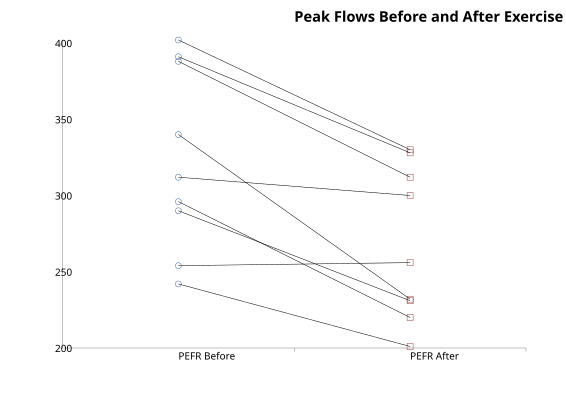

Ladder Plot
Menu location: Graphics_Ladder.
StatsDirect provides a ladder plot for the comparison of paired data. This is a useful pictorial accompaniment to paired t and Wilcoxon signed ranks tests provided the number of pairs is not too large. Each pair is joined by a line; these lines would look like the parallel rungs of a ladder if there was no difference between each pair of observations.

Example
Test workbook (Parametric worksheet: PEFR Before, PEFR After).
Consider the peak expiratory flow rate (PEFR) of 9 asthmatics before and after a walk on a cold winter's day, the data of the paired t test example.
To draw this plot in StatsDirect open the test workbook using the file open function of the file menu. Then select Ladder from the Graphics menu and select the columns marked "PEFR Before" and "PEFR After" when prompted for the data. StatsDirect draws the first column a quarter of the way along the horizontal axis and the second three quarters of the way along it, with a circle for each value in the first column, a square for each value in the second and a black line joining each pair: the rung of the ladder. A pair with a blank cell in either column is left out. The chart is titled "Ladder plot" and the two ends are labelled with the column titles; the title, the vertical axis and the markers can be changed through the chart options, as the title of the plot above was.
For this example the plot above shows that the peak flow fell in 8 of the 9 pairs, rose in 1 (254 to 256) and was unchanged in none: the rungs slope down to the right rather than lying parallel. Mean of differences = 56.111111, the quantity the paired t test examines (two sided P = 0.0012 in that example).
This R code reproduces the illustration above. It needs no packages and was checked with R 4.6.1. Paste it into R, or save it as a script and run it.
# Ladder plot: the StatsDirect help illustration (peak expiratory flow rate before
# and after a walk on a cold day in 9 asthmatics, the paired t test example; the test
# workbook's Parametric worksheet columns PEFR Before and PEFR After) in R
before <- c(312, 242, 340, 388, 296, 254, 391, 402, 290)
after <- c(300, 201, 232, 312, 220, 256, 328, 330, 231)
# StatsDirect puts the first column a quarter of the way along the x axis and the
# second three quarters of the way, a circle for each "before" value and a square for
# each "after" value, and joins each pair with a black line, the rung of the ladder.
# A pair with a blank in either column is left out. The axes are not boxed and the y
# axis has no title.
ok <- !is.na(before) & !is.na(after)
plot(c(0, 1), range(before, after, na.rm = TRUE), type = "n", xaxt = "n", bty = "l",
xlab = "", ylab = "", main = "Ladder plot")
axis(1, at = c(0.25, 0.75), labels = c("PEFR Before", "PEFR After"))
segments(0.25, before[ok], 0.75, after[ok])
points(rep(0.25, sum(ok)), before[ok], pch = 1, col = "#40699C")
points(rep(0.75, sum(ok)), after[ok], pch = 0, col = "#9E413E")
# What the rungs show: the direction of change in each pair, and the mean difference
# that the paired t test examines
six <- function(x) formatC(x, digits = 6, format = "f", drop0trailing = TRUE)
d <- before[ok] - after[ok]
cat("Ladder plot of PEFR Before (circles) to PEFR After (squares)\n")
cat("Pairs plotted =", length(d), "\n")
cat("The peak flow fell in", sum(d > 0), "of the", length(d), "pairs, rose in",
sum(d < 0), "and was unchanged in", sum(d == 0), "\n")
cat("Mean of differences =", six(mean(d)), "\n")